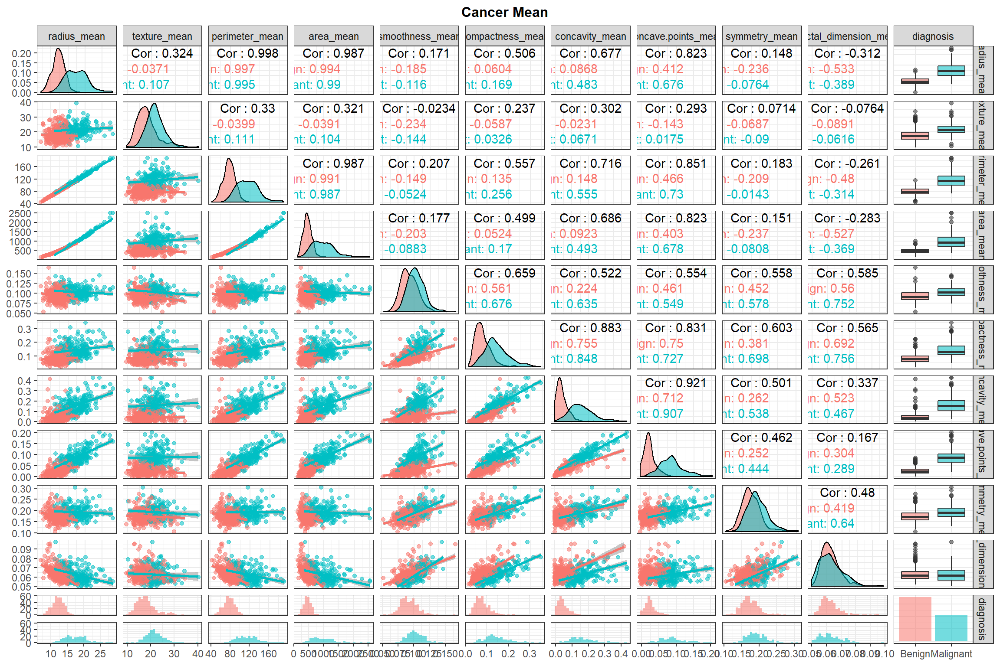

## 'data.frame': 569 obs. of 31 variables:
## $ diagnosis : Factor w/ 2 levels "Benign","Malignant": 2 2 2 2 2 2 2 2 2 2 ...
## $ radius_mean : num 18 20.6 19.7 11.4 20.3 ...
## $ texture_mean : num 10.4 17.8 21.2 20.4 14.3 ...
## $ perimeter_mean : num 122.8 132.9 130 77.6 135.1 ...
## $ area_mean : num 1001 1326 1203 386 1297 ...
## $ smoothness_mean : num 0.1184 0.0847 0.1096 0.1425 0.1003 ...
## $ compactness_mean : num 0.2776 0.0786 0.1599 0.2839 0.1328 ...
## $ concavity_mean : num 0.3001 0.0869 0.1974 0.2414 0.198 ...
## $ concave.points_mean : num 0.1471 0.0702 0.1279 0.1052 0.1043 ...
## $ symmetry_mean : num 0.242 0.181 0.207 0.26 0.181 ...
## $ fractal_dimension_mean : num 0.0787 0.0567 0.06 0.0974 0.0588 ...
## $ radius_se : num 1.095 0.543 0.746 0.496 0.757 ...
## $ texture_se : num 0.905 0.734 0.787 1.156 0.781 ...
## $ perimeter_se : num 8.59 3.4 4.58 3.44 5.44 ...
## $ area_se : num 153.4 74.1 94 27.2 94.4 ...
## $ smoothness_se : num 0.0064 0.00522 0.00615 0.00911 0.01149 ...
## $ compactness_se : num 0.049 0.0131 0.0401 0.0746 0.0246 ...
## $ concavity_se : num 0.0537 0.0186 0.0383 0.0566 0.0569 ...
## $ concave.points_se : num 0.0159 0.0134 0.0206 0.0187 0.0188 ...
## $ symmetry_se : num 0.03 0.0139 0.0225 0.0596 0.0176 ...
## $ fractal_dimension_se : num 0.00619 0.00353 0.00457 0.00921 0.00511 ...
## $ radius_worst : num 25.4 25 23.6 14.9 22.5 ...
## $ texture_worst : num 17.3 23.4 25.5 26.5 16.7 ...
## $ perimeter_worst : num 184.6 158.8 152.5 98.9 152.2 ...
## $ area_worst : num 2019 1956 1709 568 1575 ...
## $ smoothness_worst : num 0.162 0.124 0.144 0.21 0.137 ...
## $ compactness_worst : num 0.666 0.187 0.424 0.866 0.205 ...
## $ concavity_worst : num 0.712 0.242 0.45 0.687 0.4 ...
## $ concave.points_worst : num 0.265 0.186 0.243 0.258 0.163 ...
## $ symmetry_worst : num 0.46 0.275 0.361 0.664 0.236 ...
## $ fractal_dimension_worst: num 0.1189 0.089 0.0876 0.173 0.0768 ...## diagnosis radius_mean texture_mean perimeter_mean
## Benign :357 Min. : 6.981 Min. : 9.71 Min. : 43.79
## Malignant:212 1st Qu.:11.700 1st Qu.:16.17 1st Qu.: 75.17
## Median :13.370 Median :18.84 Median : 86.24
## Mean :14.127 Mean :19.29 Mean : 91.97
## 3rd Qu.:15.780 3rd Qu.:21.80 3rd Qu.:104.10
## Max. :28.110 Max. :39.28 Max. :188.50
## area_mean smoothness_mean compactness_mean concavity_mean
## Min. : 143.5 Min. :0.05263 Min. :0.01938 Min. :0.00000
## 1st Qu.: 420.3 1st Qu.:0.08637 1st Qu.:0.06492 1st Qu.:0.02956
## Median : 551.1 Median :0.09587 Median :0.09263 Median :0.06154
## Mean : 654.9 Mean :0.09636 Mean :0.10434 Mean :0.08880
## 3rd Qu.: 782.7 3rd Qu.:0.10530 3rd Qu.:0.13040 3rd Qu.:0.13070
## Max. :2501.0 Max. :0.16340 Max. :0.34540 Max. :0.42680
## concave.points_mean symmetry_mean fractal_dimension_mean
## Min. :0.00000 Min. :0.1060 Min. :0.04996
## 1st Qu.:0.02031 1st Qu.:0.1619 1st Qu.:0.05770
## Median :0.03350 Median :0.1792 Median :0.06154
## Mean :0.04892 Mean :0.1812 Mean :0.06280
## 3rd Qu.:0.07400 3rd Qu.:0.1957 3rd Qu.:0.06612
## Max. :0.20120 Max. :0.3040 Max. :0.09744
## radius_se texture_se perimeter_se area_se
## Min. :0.1115 Min. :0.3602 Min. : 0.757 Min. : 6.802
## 1st Qu.:0.2324 1st Qu.:0.8339 1st Qu.: 1.606 1st Qu.: 17.850
## Median :0.3242 Median :1.1080 Median : 2.287 Median : 24.530
## Mean :0.4052 Mean :1.2169 Mean : 2.866 Mean : 40.337
## 3rd Qu.:0.4789 3rd Qu.:1.4740 3rd Qu.: 3.357 3rd Qu.: 45.190
## Max. :2.8730 Max. :4.8850 Max. :21.980 Max. :542.200
## smoothness_se compactness_se concavity_se
## Min. :0.001713 Min. :0.002252 Min. :0.00000
## 1st Qu.:0.005169 1st Qu.:0.013080 1st Qu.:0.01509
## Median :0.006380 Median :0.020450 Median :0.02589
## Mean :0.007041 Mean :0.025478 Mean :0.03189
## 3rd Qu.:0.008146 3rd Qu.:0.032450 3rd Qu.:0.04205
## Max. :0.031130 Max. :0.135400 Max. :0.39600
## concave.points_se symmetry_se fractal_dimension_se
## Min. :0.000000 Min. :0.007882 Min. :0.0008948
## 1st Qu.:0.007638 1st Qu.:0.015160 1st Qu.:0.0022480
## Median :0.010930 Median :0.018730 Median :0.0031870
## Mean :0.011796 Mean :0.020542 Mean :0.0037949
## 3rd Qu.:0.014710 3rd Qu.:0.023480 3rd Qu.:0.0045580
## Max. :0.052790 Max. :0.078950 Max. :0.0298400
## radius_worst texture_worst perimeter_worst area_worst
## Min. : 7.93 Min. :12.02 Min. : 50.41 Min. : 185.2
## 1st Qu.:13.01 1st Qu.:21.08 1st Qu.: 84.11 1st Qu.: 515.3
## Median :14.97 Median :25.41 Median : 97.66 Median : 686.5
## Mean :16.27 Mean :25.68 Mean :107.26 Mean : 880.6
## 3rd Qu.:18.79 3rd Qu.:29.72 3rd Qu.:125.40 3rd Qu.:1084.0
## Max. :36.04 Max. :49.54 Max. :251.20 Max. :4254.0
## smoothness_worst compactness_worst concavity_worst concave.points_worst
## Min. :0.07117 Min. :0.02729 Min. :0.0000 Min. :0.00000
## 1st Qu.:0.11660 1st Qu.:0.14720 1st Qu.:0.1145 1st Qu.:0.06493
## Median :0.13130 Median :0.21190 Median :0.2267 Median :0.09993
## Mean :0.13237 Mean :0.25427 Mean :0.2722 Mean :0.11461
## 3rd Qu.:0.14600 3rd Qu.:0.33910 3rd Qu.:0.3829 3rd Qu.:0.16140
## Max. :0.22260 Max. :1.05800 Max. :1.2520 Max. :0.29100
## symmetry_worst fractal_dimension_worst
## Min. :0.1565 Min. :0.05504
## 1st Qu.:0.2504 1st Qu.:0.07146
## Median :0.2822 Median :0.08004
## Mean :0.2901 Mean :0.08395
## 3rd Qu.:0.3179 3rd Qu.:0.09208
## Max. :0.6638 Max. :0.20750| diagnosis | radius_mean | texture_mean | perimeter_mean | area_mean | smoothness_mean | compactness_mean | concavity_mean | concave.points_mean | symmetry_mean | fractal_dimension_mean | radius_se | texture_se | perimeter_se | area_se | smoothness_se | compactness_se | concavity_se | concave.points_se | symmetry_se | fractal_dimension_se | radius_worst | texture_worst | perimeter_worst | area_worst | smoothness_worst | compactness_worst | concavity_worst | concave.points_worst | symmetry_worst | fractal_dimension_worst |
|---|---|---|---|---|---|---|---|---|---|---|---|---|---|---|---|---|---|---|---|---|---|---|---|---|---|---|---|---|---|---|
| Malignant | 17.99 | 10.38 | 122.80 | 1001.0 | 0.11840 | 0.27760 | 0.3001 | 0.14710 | 0.2419 | 0.07871 | 1.0950 | 0.9053 | 8.589 | 153.40 | 0.006399 | 0.04904 | 0.05373 | 0.01587 | 0.03003 | 0.006193 | 25.38 | 17.33 | 184.60 | 2019.0 | 0.1622 | 0.6656 | 0.7119 | 0.2654 | 0.4601 | 0.11890 |
| Malignant | 20.57 | 17.77 | 132.90 | 1326.0 | 0.08474 | 0.07864 | 0.0869 | 0.07017 | 0.1812 | 0.05667 | 0.5435 | 0.7339 | 3.398 | 74.08 | 0.005225 | 0.01308 | 0.01860 | 0.01340 | 0.01389 | 0.003532 | 24.99 | 23.41 | 158.80 | 1956.0 | 0.1238 | 0.1866 | 0.2416 | 0.1860 | 0.2750 | 0.08902 |
| Malignant | 19.69 | 21.25 | 130.00 | 1203.0 | 0.10960 | 0.15990 | 0.1974 | 0.12790 | 0.2069 | 0.05999 | 0.7456 | 0.7869 | 4.585 | 94.03 | 0.006150 | 0.04006 | 0.03832 | 0.02058 | 0.02250 | 0.004571 | 23.57 | 25.53 | 152.50 | 1709.0 | 0.1444 | 0.4245 | 0.4504 | 0.2430 | 0.3613 | 0.08758 |
| Malignant | 11.42 | 20.38 | 77.58 | 386.1 | 0.14250 | 0.28390 | 0.2414 | 0.10520 | 0.2597 | 0.09744 | 0.4956 | 1.1560 | 3.445 | 27.23 | 0.009110 | 0.07458 | 0.05661 | 0.01867 | 0.05963 | 0.009208 | 14.91 | 26.50 | 98.87 | 567.7 | 0.2098 | 0.8663 | 0.6869 | 0.2575 | 0.6638 | 0.17300 |
| Malignant | 20.29 | 14.34 | 135.10 | 1297.0 | 0.10030 | 0.13280 | 0.1980 | 0.10430 | 0.1809 | 0.05883 | 0.7572 | 0.7813 | 5.438 | 94.44 | 0.011490 | 0.02461 | 0.05688 | 0.01885 | 0.01756 | 0.005115 | 22.54 | 16.67 | 152.20 | 1575.0 | 0.1374 | 0.2050 | 0.4000 | 0.1625 | 0.2364 | 0.07678 |
| Malignant | 12.45 | 15.70 | 82.57 | 477.1 | 0.12780 | 0.17000 | 0.1578 | 0.08089 | 0.2087 | 0.07613 | 0.3345 | 0.8902 | 2.217 | 27.19 | 0.007510 | 0.03345 | 0.03672 | 0.01137 | 0.02165 | 0.005082 | 15.47 | 23.75 | 103.40 | 741.6 | 0.1791 | 0.5249 | 0.5355 | 0.1741 | 0.3985 | 0.12440 |
## 2. Correlation and relationship between variables

high correlation value means it has “multicollinearity” between variables. Use one main component for model development by reduct the variables with high correlation.
The percentage of variability explained by the principal components can be ascertained through screeplot.
Shuffle the wbcd data(100%) & Make train dataset(70%), test dataset(30%)
##
## Benign Malignant
## 0.6281407 0.3718593##
## Benign Malignant
## 0.625731 0.374269library(caret)library(rpart)
learn_rp <- rpart(diagnosis~.,data=train,control=rpart.control(minsplit=2))
pre_rp <- predict(learn_rp, test[,-1], type="class")
cm_rp <- confusionMatrix(pre_rp, test$diagnosis)
cm_rp## Confusion Matrix and Statistics
##
## Reference
## Prediction Benign Malignant
## Benign 105 6
## Malignant 2 58
##
## Accuracy : 0.9532
## 95% CI : (0.9099, 0.9796)
## No Information Rate : 0.6257
## P-Value [Acc > NIR] : <2e-16
##
## Kappa : 0.8988
## Mcnemar's Test P-Value : 0.2888
##
## Sensitivity : 0.9813
## Specificity : 0.9062
## Pos Pred Value : 0.9459
## Neg Pred Value : 0.9667
## Prevalence : 0.6257
## Detection Rate : 0.6140
## Detection Prevalence : 0.6491
## Balanced Accuracy : 0.9438
##
## 'Positive' Class : Benign
## library(randomForest)
learn_rf <- randomForest(diagnosis~., data=train, ntree=500, proximity=T, importance=T)
pre_rf <- predict(learn_rf, test[,-1])
cm_rf <- confusionMatrix(pre_rf, test$diagnosis)
cm_rf## Confusion Matrix and Statistics
##
## Reference
## Prediction Benign Malignant
## Benign 106 4
## Malignant 1 60
##
## Accuracy : 0.9708
## 95% CI : (0.9331, 0.9904)
## No Information Rate : 0.6257
## P-Value [Acc > NIR] : <2e-16
##
## Kappa : 0.937
## Mcnemar's Test P-Value : 0.3711
##
## Sensitivity : 0.9907
## Specificity : 0.9375
## Pos Pred Value : 0.9636
## Neg Pred Value : 0.9836
## Prevalence : 0.6257
## Detection Rate : 0.6199
## Detection Prevalence : 0.6433
## Balanced Accuracy : 0.9641
##
## 'Positive' Class : Benign
## plot(learn_rf, main="Random Forest (Error Rate vs. Number of Trees)")Important parameters for accuracy improvement are determined by the “MeanDecreaseAccuracy”.
Important parameters for improving node impurities are determined by the “MeanDecreaseGini”.
varImpPlot(learn_rf)library(party)
learn_ct <- ctree(diagnosis~., data=train, controls=ctree_control(maxdepth=2))
pre_ct <- predict(learn_ct, test[,-1])
cm_ct <- confusionMatrix(pre_ct, test$diagnosis)
cm_ct## Confusion Matrix and Statistics
##
## Reference
## Prediction Benign Malignant
## Benign 98 3
## Malignant 9 61
##
## Accuracy : 0.9298
## 95% CI : (0.8806, 0.9632)
## No Information Rate : 0.6257
## P-Value [Acc > NIR] : <2e-16
##
## Kappa : 0.8529
## Mcnemar's Test P-Value : 0.1489
##
## Sensitivity : 0.9159
## Specificity : 0.9531
## Pos Pred Value : 0.9703
## Neg Pred Value : 0.8714
## Prevalence : 0.6257
## Detection Rate : 0.5731
## Detection Prevalence : 0.5906
## Balanced Accuracy : 0.9345
##
## 'Positive' Class : Benign
## library(class)
acc_test <- numeric()
for(i in 1:30){
predict <- knn(train=train[,-1], test=test[,-1], cl=train[,1], k=i, prob=T)
acc_test <- c(acc_test,mean(predict==test[,1]))
}
acc <- data.frame(k= seq(1,30), cnt = acc_test)
opt_k <- subset(acc, cnt==max(cnt))[1,]
sub <- paste("Optimal number of k is", opt_k$k, "(accuracy :", opt_k$cnt,") in KNN")
library(highcharter)
# hchart(acc, 'line', hcaes(k, cnt)) %>%
# hc_title(text = "Accuracy With Varying K (KNN)") %>%
# hc_subtitle(text = sub) %>%
# hc_add_theme(hc_theme_google()) %>%
# hc_xAxis(title = list(text = "Number of Neighbors(k)")) %>%
# hc_yAxis(title = list(text = "Accuracy"))library(class)
library(caret)
pre_knn <- knn(train = train[,-1], test = test[,-1], cl = train[,1], k=opt_k$k, prob=T)
cm_knn <- confusionMatrix(pre_knn, test$diagnosis)
cm_knn## Confusion Matrix and Statistics
##
## Reference
## Prediction Benign Malignant
## Benign 106 10
## Malignant 1 54
##
## Accuracy : 0.9357
## 95% CI : (0.8878, 0.9675)
## No Information Rate : 0.6257
## P-Value [Acc > NIR] : < 2e-16
##
## Kappa : 0.8587
## Mcnemar's Test P-Value : 0.01586
##
## Sensitivity : 0.9907
## Specificity : 0.8438
## Pos Pred Value : 0.9138
## Neg Pred Value : 0.9818
## Prevalence : 0.6257
## Detection Rate : 0.6199
## Detection Prevalence : 0.6784
## Balanced Accuracy : 0.9172
##
## 'Positive' Class : Benign
## we have to make function to predict using kmeans methods, since orgin predict function don’t support kmeans.
predict.kmeans <- function(newdata, object){
centers <- object$centers
n_centers <- nrow(centers)
dist_mat <- as.matrix(dist(rbind(centers, newdata)))
dist_mat <- dist_mat[-seq(n_centers), seq(n_centers)]
max.col(-dist_mat)
}you have to apply centers to 2, since there are only two factors(benign, malignant)
# library(caret)
# learn_kmeans <- kmeans(train[,-1], centers=2)
#
# pre_kmeans <- predict.kmeans(test[,-1],learn_kmeans)
# pre_kmeans <- ifelse(pre_kmeans == 1,"Benign","Malignant")
# cm_kmeans <- confusionMatrix(pre_kmeans, test$diagnosis)
# length(pre_kmeans)==length(test$diagnosis)
# str(test$diagnosis)
# cm_kmeanslibrary(factoextra)
# learn_kmeans$cluster <- ifelse(learn_kmeans$cluster == 1,"Benign","Malignant")
# fviz_cluster(learn_kmeans, data = train[,-1])library(gbm)
test_gbm <- gbm(diagnosis~., data=train, distribution="gaussian",n.trees = 10000,
shrinkage = 0.01, interaction.depth = 4, bag.fraction=0.5, train.fraction=0.5,n.minobsinnode=10,cv.folds=3,keep.data=TRUE,verbose=FALSE,n.cores=1)
best.iter <- gbm.perf(test_gbm, method="cv",plot.it=FALSE)fitControl = trainControl(method="cv", number=5, returnResamp="all")
learn_gbm = train(diagnosis~., data=train, method="gbm", distribution="bernoulli", trControl=fitControl, verbose=F, tuneGrid=data.frame(.n.trees=best.iter, .shrinkage=0.01, .interaction.depth=1, .n.minobsinnode=1))
pre_gbm <- predict(learn_gbm, test[,-1])
cm_gbm <- confusionMatrix(pre_gbm, test$diagnosis)
cm_gbm## Confusion Matrix and Statistics
##
## Reference
## Prediction Benign Malignant
## Benign 106 5
## Malignant 1 59
##
## Accuracy : 0.9649
## 95% CI : (0.9252, 0.987)
## No Information Rate : 0.6257
## P-Value [Acc > NIR] : <2e-16
##
## Kappa : 0.9241
## Mcnemar's Test P-Value : 0.2207
##
## Sensitivity : 0.9907
## Specificity : 0.9219
## Pos Pred Value : 0.9550
## Neg Pred Value : 0.9833
## Prevalence : 0.6257
## Detection Rate : 0.6199
## Detection Prevalence : 0.6491
## Balanced Accuracy : 0.9563
##
## 'Positive' Class : Benign
## library(e1071)
learn_svm <- svm(diagnosis~., data=train)
pre_svm <- predict(learn_svm, test[,-1])
cm_svm <- confusionMatrix(pre_svm, test$diagnosis)
cm_svm## Confusion Matrix and Statistics
##
## Reference
## Prediction Benign Malignant
## Benign 106 3
## Malignant 1 61
##
## Accuracy : 0.9766
## 95% CI : (0.9412, 0.9936)
## No Information Rate : 0.6257
## P-Value [Acc > NIR] : <2e-16
##
## Kappa : 0.9497
## Mcnemar's Test P-Value : 0.6171
##
## Sensitivity : 0.9907
## Specificity : 0.9531
## Pos Pred Value : 0.9725
## Neg Pred Value : 0.9839
## Prevalence : 0.6257
## Detection Rate : 0.6199
## Detection Prevalence : 0.6374
## Balanced Accuracy : 0.9719
##
## 'Positive' Class : Benign
## gamma <- seq(0,0.1,0.005)
cost <- 2^(0:5)
parms <- expand.grid(cost=cost, gamma=gamma) ## 231
acc_test <- numeric()
accuracy1 <- NULL; accuracy2 <- NULL
for(i in 1:NROW(parms)){
learn_svm <- svm(diagnosis~., data=train, gamma=parms$gamma[i], cost=parms$cost[i])
pre_svm <- predict(learn_svm, test[,-1])
accuracy1 <- confusionMatrix(pre_svm, test$diagnosis)
accuracy2[i] <- accuracy1$overall[1]
}
acc <- data.frame(p= seq(1,NROW(parms)), cnt = accuracy2)
opt_p <- subset(acc, cnt==max(cnt))[1,]
sub <- paste("Optimal number of parameter is", opt_p$p, "(accuracy :", opt_p$cnt,") in SVM")
library(highcharter)
library(magrittr)
# hchart(acc, 'line', hcaes(p, cnt)) %>%
# hc_title(text = "Accuracy With Varying Parameters (SVM)") %>%
# hc_subtitle(text = sub) %>%
# hc_add_theme(hc_theme_google()) %>%
# hc_xAxis(title = list(text = "Number of Parameters")) %>%
# hc_yAxis(title = list(text = "Accuracy"))library(e1071)
library(caret)
learn_imp_svm <- svm(diagnosis~., data=train, cost=parms$cost[opt_p$p], gamma=parms$gamma[opt_p$p])
pre_imp_svm <- predict(learn_imp_svm, test[,-1])
cm_imp_svm <- confusionMatrix(pre_imp_svm, test$diagnosis)
cm_imp_svm## Confusion Matrix and Statistics
##
## Reference
## Prediction Benign Malignant
## Benign 107 2
## Malignant 0 62
##
## Accuracy : 0.9883
## 95% CI : (0.9584, 0.9986)
## No Information Rate : 0.6257
## P-Value [Acc > NIR] : <2e-16
##
## Kappa : 0.9749
## Mcnemar's Test P-Value : 0.4795
##
## Sensitivity : 1.0000
## Specificity : 0.9688
## Pos Pred Value : 0.9817
## Neg Pred Value : 1.0000
## Prevalence : 0.6257
## Detection Rate : 0.6257
## Detection Prevalence : 0.6374
## Balanced Accuracy : 0.9844
##
## 'Positive' Class : Benign
## Select a best prediction model according to high accuracy
## imp_svm
## 0.9883041